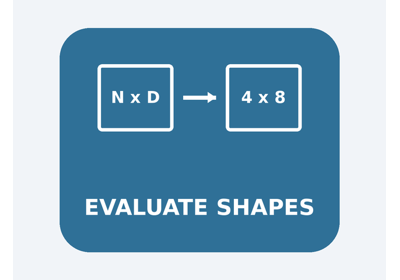

Note
Go to the end to download the full example code.
Optimized Shape inference#
This example compares three approaches to shape inference on a graph that mirrors a common transformer pattern:
added = Add(X, Y) # [batch, seq, d_model]
concat_out = Concat(added, X, axis=2) # [batch, seq, 2·d_model]
Z = Reshape(concat_out, [0, 0, -1]) # [batch, seq, 2·d_model]
The Reshape target shape [0, 0, -1] means “keep dim 0, keep dim 1,
infer dim 2 from the element count”. Its values are stored in an
initializer tensor named reshape_shape.
The three approaches compared here are:
model-level via
infer_shapes_model()— internally reads initializer values, soZis fully resolved.node-by-node (naïve) — seeds the
ShapesContextwith initializer shapes only; the[0, 0, -1]values are not propagated, so the Reshape output carries symbolic placeholders.node-by-node (with value propagation) — additionally calls
set_value_as_shape()for each initializer, enabling full resolution ofZ.
The final plot shows the last inferred dimension for each tensor under
every approach, making the divergence for Z immediately visible.
Understanding value_info#
ONNX models store inferred shapes in model.graph.value_info, which is a
list of ValueInfoProto messages. Each entry associates a tensor name with
its type and shape. When you call
infer_shapes_model(), the
function mutates the model in place and populates value_info with the
inferred shapes for all intermediate tensors. Graph inputs and outputs store
their shapes directly in model.graph.input and model.graph.output.
For systematic testing of shape inference across many test cases using
make_test_class(), see Retrieve a backend test case and display its model and data.
from __future__ import annotations
import onnx_light.onnx as onnxl
import onnx_light.onnx.defs as defs
import onnx_light.onnx.helper as oh
import onnx_light.onnx.numpy_helper as onh
from onnx_light.onnx.backend import collect_test_cases
from onnx_light.onnx_core.shape_inference import (
infer_shapes_model,
SymTensor,
ShapeEventAction,
ShapesContext,
)
from onnx_light.tools import pretty_onnx
# Make sure the built-in operator schemas are registered before running
# shape inference (the C++ dispatch table looks them up).
defs.register_onnx_operator_set_schema()
Build the model#
The graph computes Z = Reshape(Concat(Add(X, Y), X, axis=2), [0, 0, -1]).
Both X and Y are 3-D float inputs with symbolic dimensions
["batch", "seq", 8]: the batch size and sequence length are dynamic
(symbolic) while the model dimension d_model = 8 is concrete. The
Reshape target shape is stored as an INT64 initializer
reshape_shape = [0, 0, -1].
model = oh.make_model(
oh.make_graph(
[
oh.make_node("Add", ["X", "Y"], ["added"]),
oh.make_node("Concat", ["added", "X"], ["concat_out"], axis=2),
oh.make_node("Reshape", ["concat_out", "reshape_shape"], ["Z"]),
],
"shape_inference_demo",
inputs=[
oh.make_tensor_value_info("X", onnxl.TensorProto.FLOAT, ["batch", "seq", 8]),
oh.make_tensor_value_info("Y", onnxl.TensorProto.FLOAT, ["batch", "seq", 8]),
],
outputs=[oh.make_tensor_value_info("Z", onnxl.TensorProto.FLOAT, None)],
initializer=[oh.make_tensor("reshape_shape", onnxl.TensorProto.INT64, [3], [0, 0, -1])],
),
opset_imports=[oh.make_opsetid("", 18)],
ir_version=8,
)
# Ordered list of intermediate / output tensors to track.
TRACKED = ["added", "concat_out", "Z"]
The model.
print(pretty_onnx(model))
# ---------------------------------------------------------------------------
# Helper: extract the last inferred dimension as an integer, or ``None`` when
# the dimension is symbolic (i.e. not a concrete integer).
# ---------------------------------------------------------------------------
def last_dim_int(shape):
"""Return the last element of *shape* if it is a concrete integer."""
if not shape:
return None
last = shape[-1]
return last if isinstance(last, int) else None
opset: domain='' version=18
graph: name='shape_inference_demo'
input: float[batch,seq,8] X
input: float[batch,seq,8] Y
init: int64[3] reshape_shape
0: Add(X, Y) -> added
1: Concat(added, X) -> concat_out
2: Reshape(concat_out, reshape_shape) -> Z
output: float[] Z
Approach 1 — model-level inference#
infer_shapes_model() mutates model in place, writing the inferred
types and shapes back into model.graph.output and
model.graph.value_info. Internally it reads the values of every
initializer, which lets it fully resolve the [0, 0, -1] target and
derive Z = ["batch", "seq", 16].
infer_shapes_model(model)
model_shapes = {}
# Collect from value_info (intermediate tensors).
for vi in model.graph.value_info:
model_shapes[vi.name] = [
d.dim_value if d.dim_value else d.dim_param for d in vi.type.tensor_type.shape.dim
]
# Collect from the graph output.
for o in model.graph.output:
model_shapes[o.name] = [
d.dim_value if d.dim_value else d.dim_param for d in o.type.tensor_type.shape.dim
]
print("Model-level shapes:")
for name in TRACKED:
print(f" {name}: {model_shapes.get(name, '(not inferred)')}")
Model-level shapes:
added: ['batch', 'seq', 8]
concat_out: ['batch', 'seq', 16]
Z: ['batch', 'seq', 16]
Approach 2 — naïve node-by-node (no value propagation)#
The context is seeded with each initializer’s shape (an INT64 1-D
tensor of length 3) but not its values. The Reshape shape function
therefore cannot read [0, 0, -1] and falls back to symbolic
placeholder dimensions (Reshape_dim0, Reshape_dim1, Reshape_dim2).
def run_node_by_node(model, propagate_values: bool) -> dict:
"""Walk the graph and return ``{name: shape}`` for every tracked tensor."""
ctx = ShapesContext()
for opset in model.opset_import:
ctx.set_opset_version(opset.domain, opset.version)
# Seed graph inputs.
for inp in model.graph.input:
tt = inp.type.tensor_type
dims = [d.dim_value if d.dim_value else d.dim_param for d in tt.shape.dim]
ctx.set(inp.name, SymTensor(tt.elem_type, dims))
# Seed initializers, optionally propagating their values.
for init in model.graph.initializer:
t = SymTensor(init.data_type, list(init.dims))
if propagate_values:
values = [int(v) for v in onh.to_array(init).flat]
t.set_value_as_shape(values)
ctx.set(init.name, t)
results = {}
for node in model.graph.node:
ctx.check_inputs_available(node)
ctx.compute_shape_node(node)
for out_name in node.output:
if not out_name:
continue
results[str(out_name)] = list(ctx.get(str(out_name)).shape)
return results
naive_shapes = run_node_by_node(model, propagate_values=False)
print("\nNaïve node-by-node shapes:")
for name in TRACKED:
print(f" {name}: {naive_shapes.get(name, '(not inferred)')}")
Naïve node-by-node shapes:
added: ['batch', 'seq', 8]
concat_out: ['batch', 'seq', 16]
Z: ['Reshape_dim0', 'Reshape_dim1', 'Reshape_dim2']
Approach 3 — enhanced node-by-node (with value propagation)#
Calling SymTensor.set_value_as_shape() on reshape_shape
mirrors what infer_shapes_model() does internally. The Reshape
shape function can now read [0, 0, -1] and derive
Z = ["batch", "seq", 16].
enhanced_shapes = run_node_by_node(model, propagate_values=True)
print("\nEnhanced node-by-node shapes:")
for name in TRACKED:
print(f" {name}: {enhanced_shapes.get(name, '(not inferred)')}")
Enhanced node-by-node shapes:
added: ['batch', 'seq', 8]
concat_out: ['batch', 'seq', 16]
Z: ['batch', 'seq', 16]
Comparison table#
Model-level and enhanced node-by-node agree: Z = ["batch", "seq", 16].
The naïve approach cannot resolve the Reshape output because the
shape values [0, 0, -1] are not available in the context.
print("\nComparison (last dimension of each tracked tensor):")
print(f" {'tensor':<15} {'model-level':>15} {'naive':>15} {'enhanced':>15}")
for name in TRACKED:
m = last_dim_int(model_shapes.get(name) or [])
n = last_dim_int(naive_shapes.get(name) or [])
e = last_dim_int(enhanced_shapes.get(name) or [])
print(f" {name:<15} {str(m):>15} {str(n):>15} {str(e):>15}")
Comparison (last dimension of each tracked tensor):
tensor model-level naive enhanced
added 8 8 8
concat_out 16 16 16
Z 16 None 16
Shape-inference events on a backend test case#
ShapesContext can record shape-inference events when
events_enabled is set to True. The following snippet retrieves
the backend test case test_cc_shape_inference_nonzero_chain_named
and runs model-level shape inference while capturing the event log.
The log contains:
descriptor mutations (
add/replace) each time a tensor shape is stored in the context,one
compute_nodeentry per processed node with operator metadata.
NONZERO_CHAIN_TEST_CASE_NAME = "test_cc_shape_inference_nonzero_chain_named"
shape_cases = collect_test_cases("shape")
nonzero_case = next((tc for tc in shape_cases if tc.name == NONZERO_CHAIN_TEST_CASE_NAME), None)
if nonzero_case is None:
raise RuntimeError(
f"Unable to find backend test case {NONZERO_CHAIN_TEST_CASE_NAME!r}. "
"Check collect_test_cases('shape') output and test case registration."
)
case_model = onnxl.ModelProto()
case_model.CopyFrom(nonzero_case.model)
Prints the model.
print(pretty_onnx(case_model))
opset: domain='' version=18
graph: name='test_cc_shape_inference_nonzero_chain_named'
input: float[batch,seq] X
0: Abs(X) -> abs_out
1: Relu(abs_out) -> relu_out
2: Add(relu_out, relu_out) -> double_out
3: Mul(double_out, relu_out) -> mul_out
4: NonZero(mul_out) -> nz_pre_abs
5: Abs(nz_pre_abs) -> nz
6: Transpose(nz) -> transposed_nz
7: Cast(transposed_nz) -> nz_float_pre_abs
8: Abs(nz_float_pre_abs) -> nz_float
output: int64[2,do1] nz
output: float[do1,2] nz_float
We need to clear the existing value_info in the model since they define the expected values for the model.
case_model.graph.value_info.clear()
Shape inference now.
events_ctx = ShapesContext()
events_ctx.events_enabled = True
events_ctx.compute_shape_model(case_model, prefill_with_value_info_output=True)
events_ctx.apply_inferred_shapes_to_model(case_model)
shape_events = events_ctx.events()
compute_events = [ev for ev in shape_events if ev.action == ShapeEventAction.kComputeNode]
print(f"\nShape-inference events for {NONZERO_CHAIN_TEST_CASE_NAME}:")
print(f" total events : {len(shape_events)}")
print(f" compute_node count: {len(compute_events)}")
print(" first events:")
for ev in shape_events:
if ev.action == ShapeEventAction.kComputeNode:
continue
d = ev.as_dict()
if ev.action in (ShapeEventAction.kAdd, ShapeEventAction.kReplace):
op = f"{d['op_domain']}::{d['op_type']}" if d["op_type"] else "-"
print(
f" {d['node_index']:<2d}:{d['action']:<16s} "
f"name={d['name']:<16s} shape={d['shape']!s:<16s} op={op}"
)
else:
op = f"{d['op_domain']}::{d['op_type']}" if d["op_type"] else "-"
print(f" {d['node_index']:<2d}:{d['action']:<16s} inputs={d['inputs']}")
Shape-inference events for test_cc_shape_inference_nonzero_chain_named:
total events : 26
compute_node count: 9
first events:
-1:add name=X shape=['batch', 'seq'] op=-
0 :add name=abs_out shape=['batch', 'seq'] op=-
1 :add name=relu_out shape=['batch', 'seq'] op=-
2 :add name=double_out shape=['batch', 'seq'] op=-
3 :add name=mul_out shape=['batch', 'seq'] op=-
4 :constraint_max inputs=['NonZero_nz_pre_abs_nnz', 'batch*seq']
4 :add name=nz_pre_abs shape=['2', 'NonZero_nz_pre_abs_nnz'] op=-
5 :add name=nz shape=['2', 'NonZero_nz_pre_abs_nnz'] op=-
6 :add name=transposed_nz shape=['NonZero_nz_pre_abs_nnz', '2'] op=-
7 :add name=nz_float_pre_abs shape=['NonZero_nz_pre_abs_nnz', '2'] op=-
8 :add name=nz_float shape=['NonZero_nz_pre_abs_nnz', '2'] op=-
-1:constraint inputs=['NonZero_nz_pre_abs_nnz', 'do1']
-1:replace name=nz_float shape=['do1', '2'] op=-
-1:replace name=nz shape=['2', 'do1'] op=-
-1:replace name=nz_pre_abs shape=['2', 'do1'] op=-
-1:replace name=nz_float_pre_abs shape=['do1', '2'] op=-
-1:replace name=transposed_nz shape=['do1', '2'] op=-
The results compared to the expected values.
expected_values = {i.name: i for i in nonzero_case.model.graph.value_info}
case_values = {i.name: i for i in case_model.graph.value_info}
for expected in nonzero_case.model.graph.value_info:
print(
f"expected: {pretty_onnx(expected):<35s} "
f"computed: {pretty_onnx(case_values[expected.name]):<35s}"
)
expected: float[batch,seq] abs_out computed: float[batch,seq] abs_out
expected: float[batch,seq] relu_out computed: float[batch,seq] relu_out
expected: float[batch,seq] double_out computed: float[batch,seq] double_out
expected: float[batch,seq] mul_out computed: float[batch,seq] mul_out
expected: int64[2,do1] nz_pre_abs computed: int64[2,do1] nz_pre_abs
expected: int64[do1,2] transposed_nz computed: int64[do1,2] transposed_nz
expected: float[do1,2] nz_float_pre_abs computed: float[do1,2] nz_float_pre_abs
Text plot#
The text bar chart below shows the inferred last dimension for every
tracked tensor under each approach. A ? marks a dimension that
could not be resolved to a concrete integer.
The ? for Z in the naïve row versus the concrete 16
in the model-level and enhanced rows makes the divergence immediately
visible.
approaches = ["model-level", "naive", "enhanced"]
# Collect data: last-dim per tensor per approach (None when unresolved).
data = {
"model-level": [last_dim_int(model_shapes.get(n) or []) for n in TRACKED],
"naive": [last_dim_int(naive_shapes.get(n) or []) for n in TRACKED],
"enhanced": [last_dim_int(enhanced_shapes.get(n) or []) for n in TRACKED],
}
# Scale bars so the largest value is 30 characters wide.
max_val = max((v for vals in data.values() for v in vals if v is not None), default=1)
bar_width = 30
def render_bar(value):
"""Returns a text bar for *value* (``?`` when unresolved)."""
if value is None:
return "?".ljust(bar_width) + " (unresolved)"
length = max(1, round(value / max_val * bar_width))
return "#" * length + " " * (bar_width - length) + f" {value}"
print("\nShape inference: last dimension per tensor")
print("(? = dimension not resolved to a concrete integer)\n")
for approach in approaches:
print(f" {approach}")
for name, value in zip(TRACKED, data[approach]):
print(f" {name:<12} | {render_bar(value)}")
print()
Shape inference: last dimension per tensor
(? = dimension not resolved to a concrete integer)
model-level
added | ############### 8
concat_out | ############################## 16
Z | ############################## 16
naive
added | ############### 8
concat_out | ############################## 16
Z | ? (unresolved)
enhanced
added | ############### 8
concat_out | ############################## 16
Z | ############################## 16
Total running time of the script: (0 minutes 0.020 seconds)
Related examples

Evaluating inferred shapes with concrete input dimensions
Gallery generated by Sphinx-Gallery
Example last updated
- Date:
2026-08-10